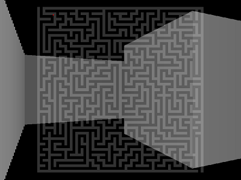

Audio Visualization
An audio visualizer with FFT analysis and shader rendering.
Written in C++ with SFML and GLSL. The shader uses a ray marching algorithm to render geometric primitives.
Watch it or browse the source code.
Love2D Demos
All demos are written in Lua with LÖVE 0.10.1.
Raycaster in a maze

A simulated 3D environment with raycasting in a 2D randomly generated maze. Using a fixed number of raycasts it determines the distance of walls from the player and draws them accordingly.
The maze is generated with the recursive backtracking algorithm and then converted to a format suitable for the renderer.
The raycaster subsystem is a partial port from http://www.playfuljs.com/a-first-person-engine-in-265-lines/
[Source]
Software Renderer
A simple 3D renderer for a set of points using transformation matrices and perspective projection. It doesn't use OpenGL functions, instead it calculates through matrix operations the final positions of 3D vertices to a 2D scene.
[Source]
Space Shooter
A top-down space shooter with physics and dynamic steering behaviours. It uses simple physics integration with movement governed by AI modifying linear and angular accelerations.
Helper libraries in lib/ from http://hump.readthedocs.org/en/latest/
[Source]